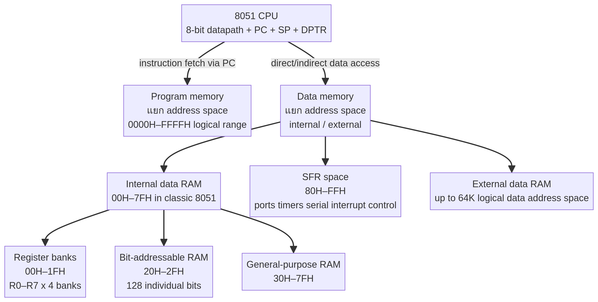
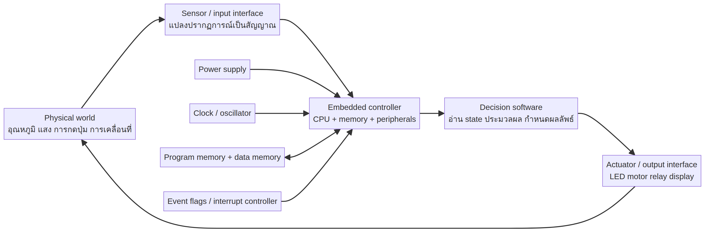
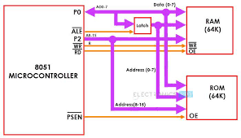
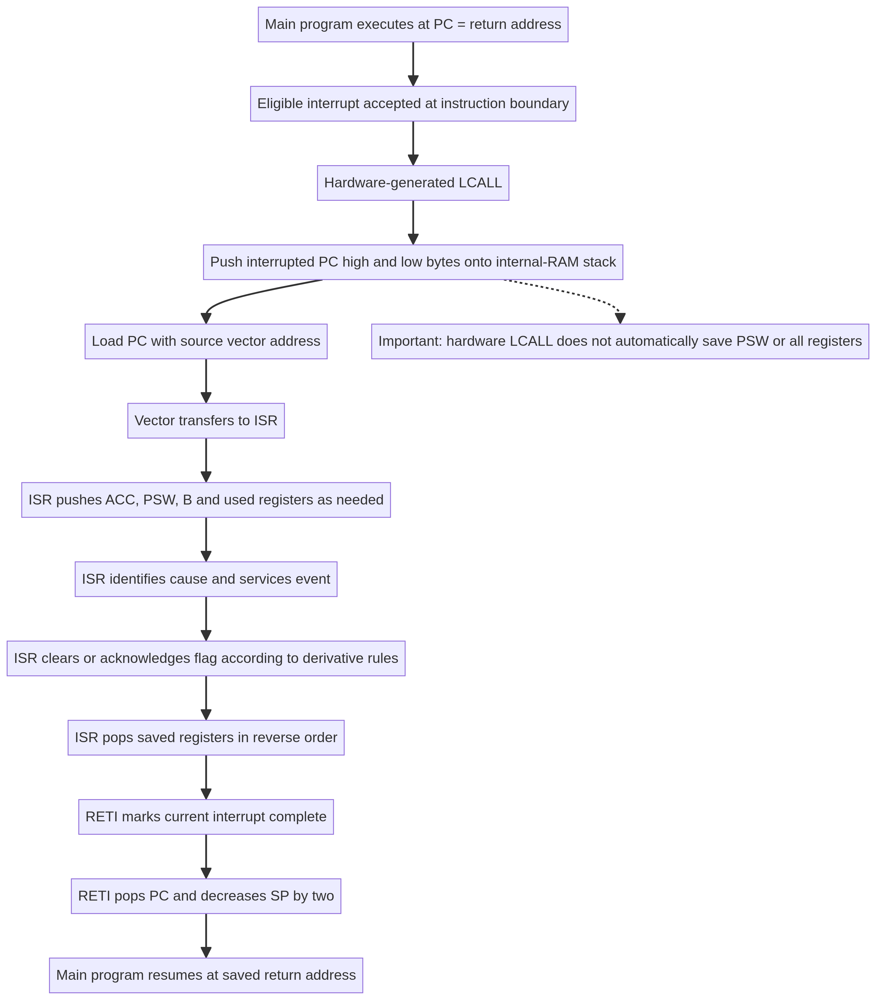
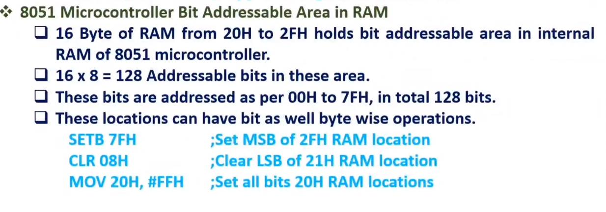
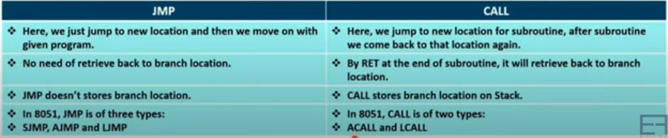
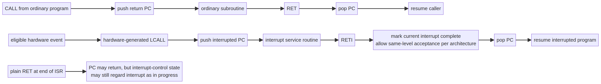

ธีมที่ 1: สถาปัตยกรรมระบบ & มิติเปรียบเทียบเชิงวิศวกรรม (Lecture 1 & Foundations)
"จงอธิบายความหมายของคำว่า '8-bit Microcontroller' ใน 8051 เหตุใดจึงไม่ขัดแย้งกับการที่ตัวประมวลผลมี Program Counter (PC) และ Data Pointer (DPTR) ขนาด 16 บิต ซึ่งสามารถเข้าถึงพื้นที่หน่วยความจำภายนอกได้สูงสุด 64 KBytes (0000H – FFFFH)?"
- ความสับสนที่พบบ่อย: นักศึกษามักคิดว่าสถาปัตยกรรม 8 บิตจะต้องมีขนาด Address 8 บิต (เข้าถึงได้แค่ 256 ไบต์) ซึ่งเป็นความเข้าใจที่ผิด
- หลักการแยกมิติ: ต้องแยกชัดเจนระหว่าง Data Path (ขนาดข้อมูลที่ประมวลผลต่อคำสั่ง) กับ Address Path (ขนาดความกว้างของบัสที่ใช้ชี้ตำแหน่งหน่วยความจำ)
การจัดหมวดหมู่ 8051 เป็น 8-bit Microcontroller พิจารณาจากคุณสมบัติของ Data Path ภายในตัวประมวลผล:
- ขนาดรีจิสเตอร์ข้อมูลและหน่วยคำนวณ (ALU): หน่วยประมวลผล ALU, Accumulator (A), รีจิสเตอร์ B, และ General Purpose Registers (R0–R7) มีขนาด 8 บิต ทำการบวก ลบ และดำเนินการทางตรรกะครั้งละ 8 บิต
- ขนาดของบัสข้อมูลภายใน (Internal Data Bus): มีความกว้าง 8 บิต ส่งข้อมูลแบบ Byte-by-Byte
- ในขณะที่ Address Path ถูกออกแบบเป็น 16 บิต: เพื่อให้มีความสามารถในการเข้าถึงโปรแกรมและข้อมูลขนาดใหญ่ ตัวประมวลผลจึงใช้รีจิสเตอร์ชี้ตำแหน่งขนาด 16 บิต ได้แก่
PC (Program Counter) และ DPTR (Data Pointer) ทำให้สามารถสร้าง Address ได้ตั้งแต่ 0000H ถึง FFFFH ($2^{16} = 65,536\text{ Bytes} = 64\text{ KB}$)

แผนภาพผัง Address Spaces ของ 8051: Program Memory 64 KB vs External Data RAM 64 KB
ต้องระบุคำว่า "ALU และ Data Bus กว้าง 8 บิต" เปรียบเทียบกับ "PC และ DPTR กว้าง 16 บิต ($2^{16} = 64\text{ KB}$)" อย่าตอบเพียงสั้นๆ ว่า "เพราะมีขา Address 16 ขา"
"ในสถาปัตยกรรม 8051 ซึ่งเป็น Harvard Architecture จงอธิบายสัญญาณควบคุมทางฮาร์ดแวร์และชุดคำสั่ง Assembly ที่ใช้ในการเข้าถึง (1) Program Memory ภายนอก และ (2) Data Memory ภายนอก พร้อมอธิบายเหตุผลว่าทำไม CPU จึงไม่เกิดความสับสนเมื่อแอดเดรสของ ROM และ RAM อยู่ที่ตำแหน่ง 1000H เหมือนกัน?"
8051 แยกพื้นที่ Program Memory (Code) และ Data Memory (RAM) ออกจากกันอย่างเด็ดขาดทั้งในเชิง Logical Address และ Physical Control Signals:
| มิติการทำงาน |
Program Memory (Code Space) |
External Data Memory (XDATA Space) |
| คำสั่งภาษาแอสเซมบลี |
MOVC A, @A+DPTR หรือ MOVC A, @A+PC |
MOVX A, @DPTR หรือ MOVX @DPTR, A |
| สัญญาณควบคุมฮาร์ดแวร์ |
ขา PSEN (Program Store Enable) ทำงาน Active-LOW |
ขา RD (P3.7) และ WR (P3.6) ทำงาน Active-LOW |
| สิทธิในการเข้าถึง |
Read-Only (อ่านคำสั่งและตารางค่าคงที่ Lookup Table) |
Read / Write (อ่านและบันทึกตัวแปรขณะโปรแกรมทำงาน) |
| การแยกแยะที่ Address เดียวกัน (เช่น 1000H) |
เมื่อ CPU ต้องการอ่าน ROM สัญญาณ PSEN จะถูกดึงลง LOW (สัญญาณ RD เป็น HIGH) ชิป ROM จึงทำงาน
เมื่อ CPU รันคำสั่ง MOVX สัญญาณ RD หรือ WR จะถูกดึงลง LOW (สัญญาณ PSEN เป็น HIGH) ชิป RAM จึงทำงาน |

โครงสร้างการแยกบัสของสถาปัตยกรรม Harvard ใน MCS-51 (Lecture 1)
"ในงานออกแบบระบบสมองกลฝังตัว คำตอบที่ถูกต้องเพียงอย่างเดียวไม่เพียงพอ แต่ต้อง 'ถูกต้องทันเวลา (Timeliness)' จงอธิบายข้อจำกัด 5 มิติหลักที่วิศวกรต้องคำนึงถึงในการออกแบบระบบ Embedded System"
- Real-Time Constraint & Latency (ข้อจำกัดด้านเวลาจริง): ผลลัพธ์ต้องเสร็จสิ้นภายในเส้นตาย (Deadline) เช่น ระบบถุงลมนิรภัย (Airbag ECU) หรือเบรก ABS การประมวลผลช้าแม้เพียงไม่กี่มิลลิวินาทีถือว่าระบบล้มเหลว (System Failure)
- Resource & Memory Limitations (ทรัพยากรหน่วยความจำจำกัด): มี RAM และ Flash ROM ในระดับกิโลไบต์ (KB) นักพัฒนาจึงต้องบริหารจัดการตัวแปรและ Stack อย่างประหยัดสูงสุด
- Power Consumption & Thermal (การใช้พลังงานและความร้อน): อุปกรณ์จำนวนมากทำงานด้วยแบตเตอรี่หรืออยู่ในพื้นที่ปิด จึงต้องออกแบบให้กินไฟต่ำ (Low Power / Sleep Modes)
- Reliability & Safety-Critical (ความเสถียรและความปลอดภัย): ระบบต้องทำงานต่อเนื่องได้ 24/7 โดยไม่แฮงก์ (ต้องมีระบบ Watchdog Timer คอยรีเซ็ตเมื่อเกิดข้อผิดพลาด)
- Cost & Physical Size (ต้นทุนต่อหน่วยและขนาด): ชิ้นงานเชิงอุตสาหกรรมผลิตจำนวนมาก ต้นทุนชิปและอุปกรณ์ต่อพ่วงทุกชิ้นมีผลต่อความอยู่รอดของผลิตภัณฑ์

โครงสร้างการเชื่อมต่อระหว่างโลกจริง (Sensors/Actuators) กับ Embedded Controller (Learning from Zero)
ธีมที่ 2: โครงสร้างฮาร์ดแวร์ พอร์ต I/O & วงจรอินเทอร์เฟซ (Lecture 2)
"จงเปรียบเทียบความสามารถในการจ่ายกระแส (Current Sourcing) และรับกระแส (Current Sinking) ของพอร์ต 8051 เหตุใดในทางปฏิบัตินิยมต่อ LED แบบ Active-LOW มากกว่า Active-HIGH และเหตุใด Port 0 จึงมีพฤติกรรมเป็น Open-Drain เมื่อใช้งานเป็น Quasi-bidirectional I/O?"
- โครงสร้างภายในพอร์ต 8051 (Quasi-Bidirectional I/O):
- Sink Current (รับกระแสเข้าขาพอร์ตเมื่อส่งลอจิก 0): ทรานซิสเตอร์ FET ภายในดึงลง Ground โดยตรง สามารถรับกระแสได้สูงถึง $10\text{ mA} - 20\text{ mA}$ ทำให้ขับ LED สว่างเต็มที่
- Source Current (จ่ายกระแสออกจากขาพอร์ตเมื่อส่งลอจิก 1): จ่ายผ่าน Internal Pull-up Resistor ซึ่งมีค่าสูง ($R \approx 20\text{ k}\Omega - 40\text{ k}\Omega$) ทำให้จ่ายกระแสได้ต่ำมากเพียงไม่กี่ร้อยไมโครแอมป์ ($\approx 100 - 300\ \mu\text{A}$) จึงไม่สามารถขับ LED แบบ Active-HIGH ให้สว่างได้ดีโดยตรง
- ทำไม Port 0 ต้องต่อ Pull-up ภายนอก (External Pull-up $4.7\text{ k}\Omega - 10\text{ k}\Omega$):
Port 0 ไม่มี Internal Pull-up Resistor ในตัว (เป็น Open-Drain Driver) เมื่อใช้เป็นพอร์ต I/O ทั่วไป หากส่งลอจิก
1 ขาพอร์ตจะลอยตัว (High-Impedance: Hi-Z) จึงต้องต่อ Pull-up ภายนอกเพื่อดึงระดับแรงดันขึ้นสู่ $V_{CC} (+5\text{V})$ เสมอ

โครงสร้างขาพอร์ต P0.0-P0.7 (Open Drain) และ P1, P2, P3 (Internal Pull-up) (Lecture 2)
"แม้ว่า Crystal 12 MHz จะทำให้ Machine Cycle คิดเลขง่าย ($1\ \mu\text{s}$) แต่ในงานสื่อสารอนุกรม (Serial Port Communication) เหตุใดวิศวกรจึงเลือกใช้ Crystal 11.0592 MHz เสมอ จงแสดงวิธีคำนวณทางคณิตศาสตร์"
ในการสื่อสารอนุกรมแบบ UART อัตราบอดมาตรฐานสากล (Standard Baud Rates) คือ 9600, 4800, 2400, 1200 bps ซึ่งสร้างจากวงจรหารความถี่ของ 8051 Timer 1 (Mode 2 Auto-reload):
Baud Rate = (2^SMOD / 32) * (f_osc / (12 * (256 - TH1)))
- กรณีใช้ Crystal 11.0592 MHz (สมมติ SMOD = 0):
ความถี่หลังผ่านตัวหาร 384 ($32 \times 12$) คือ $11,059,200 / 384 = \mathbf{28,800\text{ Hz}}$
เมื่อต้องการ 9600 Baud: ค่า Reload Value $256 - \text{TH1} = 28,800 / 9600 = \mathbf{3}$ (ลงตัวจำนวนเต็มพอดี!) $\rightarrow \text{TH1} = 256 - 3 = 253 = \mathbf{FDH}$
Baud Rate Error = 0.00% (ไม่มีความผิดพลาดในการส่งข้อมูล)
- กรณีใช้ Crystal 12.0000 MHz:
$12,000,000 / 384 = 31,250\text{ Hz}$
เมื่อต้องการ 9600 Baud: $31,250 / 9600 \approx \mathbf{3.2552}$ (ไม่ลงตัว!)
หากปัดเศษเป็น 3 จะได้ Baud Rate $= 10,416.6\text{ Baud}$ (Error สูงถึง $+8.5\%$ ทำให้ข้อมูลตัวอักษรเสียหาย / Framing Error)
"เหตุใด Port 0 ของ 8051 จึงทำหน้าที่เป็นได้ทั้งบัสแอดเดรสส่วนต่ำ (A0–A7) และบัสข้อมูล (D0–D7) สัญญาณ ALE มีบทบาทอย่างไร และในวงจรฮาร์ดแวร์ภายนอกต้องใช้อุปกรณ์ใดร่วมด้วย?"
- การแชร์ขาพอร์ต (Multiplexing): เพื่อประหยัดจำนวนขาไอซี (Pin Count) บนชิป 40 ขา 8051 จึงกำหนดให้ Port 0 ทำหน้าที่สองอย่างสลับกันตามคาบเวลา (Time Multiplexed):
- ช่วงต้นรอบสัญญาณ (Address Phase): ส่งบัสแอดเดรสบิต 0–7 (
A0–A7) ออกมา
- ช่วงท้ายรอบสัญญาณ (Data Phase): สลับมารับหรือส่งบัสข้อมูล 8 บิต (
D0–D7)
- การทำงานของสัญญาณ ALE: ขา ALE (Address Latch Enable) จะส่งสัญญาณพัลส์ Active-HIGH ออกมาในจังหวะที่ Port 0 ปล่อยแอดเดรส
A0–A7 เพื่อสั่งให้ไอซี Latch ภายนอก (เบอร์ 74HC573 หรือ 74HC373) ทำการ "ล็อกค่าแอดเดรส" ค้างไว้
- ประโยชน์: เมื่อ Port 0 สลับไปส่งข้อมูล
D0–D7 แอดเดรส A0–A7 จะยังคงถูกจ่ายนิ่งอยู่ที่ขา Output ของ 74HC573 ทำให้ชิปหน่วยความจำภายนอกรับแอดเดรสได้ถูกต้องตลอดรอบการทำงาน

โครงสร้างการเชื่อมต่อบัส Multiplexed ระหว่าง Port 0, ALE, และ External Memory (Lecture 2)
ธีมที่ 3: ผังหน่วยความจำ & รีจิสเตอร์พิเศษ SFR (Lecture 3)
"ในไมโครคอนโทรลเลอร์ 8052 มี Internal Data RAM ขนาด 256 ไบต์ (00H–FFH) และมี SFRs อยู่ที่แอดเดรส 80H–FFH ซ้อนทับกันอยู่ หากโปรแกรมเมอร์สั่ง:
(1) MOV 90H, #55H
(2) MOV R0, #90H แล้วตามด้วย MOV @R0, #55H
ข้อมูล 55H จะถูกนำไปเก็บไว้ที่ใดในแต่ละกรณี จงอธิบายกลไกของสถาปัตยกรรมอย่างละเอียด"
ใน 8052 ฮาร์ดแวร์ใช้ Addressing Mode เป็นตัวเลือกปลายทางในการเข้าถึงพื้นที่ 80H - FFH:
- กรณีที่ (1) คำสั่ง
MOV 90H, #55H (Direct Addressing):
คำสั่งแบบ Direct Address จะเข้าถึง Special Function Register (SFR) เสมอ! แอดเดรส 90H คือรีจิสเตอร์ของ Port 1 (P1) ข้อมูล 55H (01010101B) จึงถูกส่งออกไปยังขาพอร์ต P1 ทันที
- กรณีที่ (2) คำสั่ง
MOV @R0, #55H (Indirect Addressing ผ่าน @R0 หรือ @R1):
คำสั่งแบบ Indirect Address จะเข้าถึง Upper 128 Bytes Internal Data RAM เสมอ! ข้อมูล 55H จึงถูกนำไปบันทึกไว้ใน RAM ตำแหน่ง 90H โดยไม่มีผลกระทบใดๆ ต่อขาพอร์ต P1

แผนภาพผังหน่วยความจำภายใน 8052: Lower 128B, Upper 128B (Indirect), และ SFR (Direct) (Lecture 3)
"เมื่อ 8051 ถูก Reset ค่าเริ่มต้นของ Stack Pointer (SP) จะเท่ากับ 07H หากโปรแกรมเริ่มทำงานแล้วมีการใช้คำสั่ง LCALL หรือ PUSH โดยไม่ได้เปลี่ยนค่า SP ข้อมูลจะถูกเขียนทับลงในพื้นที่หน่วยความจำใด และเหตุใดโปรแกรมเมอร์จึงต้องสั่ง MOV SP, #30H หรือ #5FH ในส่วนเริ่มต้นโปรแกรม (Init Section) เสมอ?"
- พฤติกรรมของคำสั่ง PUSH และ CALL: เมื่อมีการ PUSH ข้อมูล ตัวประมวลผลจะทำการเพิ่มค่า SP ก่อน 1 ค่า (
SP = SP + 1) แล้วจึงนำข้อมูลไปวาง ณ แอดเดรสที่ SP ชี้
- ผลกระทบเมื่อ SP = 07H (Default Reset):
เมื่อเกิดการ PUSH ตัวแรก ข้อมูลจะถูกเขียนที่แอดเดรส 08H ซึ่งเป็นตำแหน่งของรีจิสเตอร์ R0 ของ Register Bank 1 (ช่วงแอดเดรส 08H - 0FH)
หากโปรแกรมมีการสลับไปใช้ Bank 1 หรือมีการเก็บตัวแปรใน R0–R7 ของ Bank 1 ข้อมูลจะถูก Stack เขียนทับ (Data Corruption) ส่งผลให้ค่าตัวแปรสูญหายหรือ Return Address เพี้ยนจนระบบค้าง (Crash)
- วิธีแก้ไขมาตรฐานในงานวิศวกรรม:
ต้องกำหนดค่า SP ใหม่ในส่วนต้นของโปรแกรมให้พ้นจากพื้นที่ Register Banks 0-3 (00H-1FH) และ Bit-Addressable RAM (20H-2FH) เช่น:

โครงสร้างการเติบโตของ Stack บน Internal RAM เมื่อมีการเรียก Subroutine หรือ Interrupt (Learning from Zero)
"ในโปรแกรมหลักกำลังทำงานอยู่ที่ Register Bank 0 (00H-07H) และเก็บค่าสำคัญไว้ใน R5 ต่อมาเกิด Interrupt หรือมีการเรียก Subroutine ซึ่งสั่ง SETB RS0 เพื่อสลับไปใช้ Bank 1 หากก่อนจบ Subroutine โปรแกรมเมอร์ลืมคืนค่าบิต RS0 ให้เป็น 0 จะเกิดข้อผิดพลาดใดในโปรแกรมหลัก และแนวทาง Context Switching ที่ปลอดภัยที่สุดคืออะไร?"
- ผลกระทบในโปรแกรมหลัก: เมื่อกลับสู่โปรแกรมหลัก บิต
RS0 ยังคงเป็น 1 ทำให้คำสั่งถัดไปที่อ้างอิง R5 จะชี้ไปยังแอดเดรส 0DH (R5 ของ Bank 1) แทนที่จะเป็น 05H (R5 ของ Bank 0) ทำให้โปรแกรมหลักอ่านค่าตัวแปรผิดชุด และเกิด Bug ร้ายแรงที่ตรวจจับได้ยาก
- แนวทาง Context Switching ที่ถูกต้อง:
เมื่อต้องการสลับ Bank ใน Subroutine หรือ ISR ต้องทำการ PUSH PSW เก็บไว้บน Stack เสมอ และ POP PSW คืนค่าก่อนกลับ:
MY_SUBROUTINE:
PUSH PSW
MOV PSW, #08H
POP PSW
RET

ผังบิตใน Program Status Word (PSW.4 = RS1, PSW.3 = RS0) (Lecture 2)
ธีมที่ 4: การวิเคราะห์และแกะรอยคำสั่งภาษาแอสเซมบลี (Lecture 4)
"สมมติให้ R0 = 30H, DPTR = 1000H, ใน Internal RAM แอดเดรส 30H มีค่า 7AH บันทึกอยู่, และใน External RAM แอดเดรส 1000H มีค่า 9FH บันทึกอยู่ จงระบุค่าใน Accumulator (A) หลังรันแต่ละคำสั่งต่อไปนี้อย่างอิสระจากกัน พร้อมระบุชื่อ Addressing Mode"
| คำสั่ง |
ชื่อโหมดการอ้างแอดเดรส |
ค่าใน A |
คำอธิบายการทำงาน |
MOV A, #30H |
Immediate Addressing |
30H |
สัญลักษณ์ # หมายถึงนำค่าคงที่ 30H โหลดเข้า A โดยตรง |
MOV A, 30H |
Direct Addressing |
7AH |
อ่านข้อมูลจาก Internal Data RAM แอดเดรส 30H เข้าสู่ A |
MOV A, @R0 |
Indirect Addressing |
7AH |
ใช้ค่าใน R0 (30H) เป็นพอยน์เตอร์ชี้ไปอ่าน Internal RAM แอดเดรส 30H |
MOVX A, @DPTR |
External Data Indirect |
9FH |
สร้างสัญญาณบัส RD อ่านข้อมูลจาก External Data RAM แอดเดรส 1000H |
"ในระบบชุดคำสั่ง 8051 มีคำสั่งควบคุมบิตเดี่ยว (Single-bit instructions) จงอธิบายว่าคำสั่ง SETB 00H, SETB 20H.0, และ SETB 80H มีผลต่อบิตใด และเหตุใด Bit Address 00H จึงไม่ได้หมายถึงบิต 0 ของ Register R0 ใน Bank 0?"
- ผัง Bit Address ใน 8051: มี 2 ส่วนหลักคือ
- พื้นที่ใน RAM ช่วง 20H – 2FH (16 ไบต์ $\times$ 8 = 128 บิต): ถูกกำหนด Bit Address ตั้งแต่
00H ถึง 7FH
- บิตใน SFR ที่ลงท้ายด้วย 0 หรือ 8 (Bit-addressable SFRs): มี Bit Address ตั้งแต่
80H ถึง FFH
- วิเคราะห์แต่ละคำสั่ง:
SETB 00H: สั่งให้บิตหมายเลข 00H เป็น 1 ซึ่งตรงกับ บิต 0 ของ Byte Address 20H ใน RAMSETB 20H.0: เป็นการเขียนแบบ Dot Notation ที่ Assembler แปลงเป็นคำสั่งเดียวกันกับ SETB 00H (ตั้งค่าบิต 0 ของไบต์ 20H ใน RAM ให้เป็น 1)SETB 80H (หรือ SETB P0.0): สั่งให้บิต P0.0 (ขาพอร์ต 0 บิตที่ 0) ของ SFR Port 0 (แอดเดรส 80H) กลายเป็น 1
- ทำไม Bit Address 00H จึงไม่ใช่ R0 ของ Bank 0: เพราะพื้นที่
00H - 1FH (Register Banks 0-3) เป็น Byte-addressable เท่านั้น ไม่สามารถสั่งคำสั่งแบบ Bit เดี่ยวได้โดยตรง

ตารางความสัมพันธ์ระหว่าง Byte Address (20H-2FH) และ Bit Address (00H-7FH) (Lecture 3)
"สมมติสภาพเริ่มต้น A = 38H, B = 49H, และ CY = 1 จงหาค่าใน Accumulator และสถานะของธง CY, AC หลังการรันคำสั่งต่อไปนี้ตามลำดับ:
(1) ADD A, #49H
(2) ตามด้วยคำสั่ง DA A (Decimal Adjust Accumulator)"
- ขั้นตอนที่ (1) คำสั่ง
ADD A, #49H:
คำนวณเลขฐานสิบหก: $38\text{H} + 49\text{H}$
บวกหลักล่าง (Nibble ล่าง): $8 + 9 = 17 = 11\text{H}$ (ได้ผลลัพธ์ $1$ เกิดตัวทดจากบิต 3 ไปบิต 4 $\rightarrow$ AC = 1)
บวกหลักบน (Nibble บน): $3 + 4 + 1\text{ (ทด)} = 8 = 8\text{H}$ (ไม่ล้นบิต 7 $\rightarrow$ CY = 0)
ผลลัพธ์หลังข้อ (1): A = 81H, CY = 0, AC = 1
- ขั้นตอนที่ (2) คำสั่ง
DA A (ปรับค่าให้เป็นเลขฐานสิบ BCD):
กฎของคำสั่ง DA A:
- ถ้าหลักล่าง $> 9$ หรือ
AC = 1: ให้บวก 06H เข้าไป
- ในที่นี้
AC = 1 $\rightarrow$ บวก 06H: $81\text{H} + 06\text{H} = \mathbf{87\text{H}}$
- หลักบนเท่ากับ $8$ (ไม่เกิน 9) และ
CY = 0 จึงไม่ต้องบวก 60H
ผลลัพธ์สุดท้ายหลังข้อ (2): A = 87H (ตรงกับการบวก BCD: $38 + 49 = \mathbf{87}$ ในฐานสิบ!), CY = 0
ธีมที่ 5: การควบคุมโฟลว์โปรแกรม ลูป และดีเลย์ (Lecture 4 & Timing)
"คำสั่ง SJMP มีขนาด 2 ไบต์ (Opcode = 80H, ตามด้วย Relative Offset 1 ไบต์แบบ Signed Number ตั้งแต่ -128 ถึง +127) จงแสดงวิธีคำนวณ Machine Code ใน 2 กรณีต่อไปนี้:
(1) คำสั่ง SJMP NEXT อยู่ที่ Address 0040H โดย Label NEXT อยู่ที่ Address 0055H
(2) คำสั่ง SJMP LOOP อยู่ที่ Address 0040H โดย Label LOOP อยู่ที่ Address 003AH"
สูตรสากลของสถาปัตยกรรม MCS-51: $\text{Offset} = \text{Target Address} - \text{PC}_{\text{next}}$ (โดย $\text{PC}_{\text{next}} = \text{Address ของคำสั่ง SJMP} + 2$)
- กรณีที่ (1) กระโดดไปข้างหน้า (Forward Jump ไปที่ 0055H):
- $\text{PC}_{\text{next}} = 0040\text{H} + 2 = 0042\text{H}$
- $\text{Offset} = 0055\text{H} - 0042\text{H} = \mathbf{13\text{H}}$ (ฐานสิบคือ $+19$ ไบต์)
- Machine Code:
80 13
- กรณีที่ (2) กระโดดถอยหลัง (Backward Jump ไปที่ 003AH):
- $\text{PC}_{\text{next}} = 0040\text{H} + 2 = 0042\text{H}$
- $\text{Offset} = 003A\text{H} - 0042\text{H} = -8$ (ในฐานสิบ)
- แปลง $-8$ เป็นเลข 8-bit Two's Complement:
$+8 = 00001000\text{B} \rightarrow \text{Invert} = 11110111\text{B} \rightarrow +1 = 11111000\text{B} = \mathbf{F8\text{H}}$
- Machine Code:
80 F8

โครงสร้างคำสั่ง Jump/Branch: SJMP (2B Relative), AJMP (2B Block), LJMP (3B Absolute) (Lecture 4)
"กำหนดให้ 8051 ใช้ Crystal $12\text{ MHz}$ ($1\text{ Machine Cycle} = 1\ \mu\text{s}$) จงคำนวณเวลาหน่วงรวม (Total Delay Time) ของฟังก์ชันย่อยต่อไปนี้อย่างละเอียดเป็นไมโครวินาที"
DELAY_SUB:
MOV R2, #200
LOOP1:
MOV R1, #250
LOOP2:
NOP
DJNZ R1, LOOP2
DJNZ R2, LOOP1
RET
แสดงการคำนวณจำนวน Machine Cycle (MC) ทีละส่วน:
- ลูปใน (LOOP2): แต่ละรอบใช้ $(1\text{ NOP} + 2\text{ DJNZ}) = 3\text{ MC}$
หมุน 250 รอบ $= 250 \times 3 = \mathbf{750\text{ MC}}$
- ลูปนอก (LOOP1): แต่ละรอบใช้ $(1\text{ MOV R1} + 750\text{ ใน LOOP2} + 2\text{ DJNZ R2}) = 753\text{ MC}$
หมุน 200 รอบ $= 200 \times 753 = \mathbf{150,600\text{ MC}}$
- ส่วนหัวและส่วนท้าย: $(1\text{ MOV R2} + 2\text{ RET} + 2\text{ LCALL}) = \mathbf{5\text{ MC}}$
- จำนวน Machine Cycles รวม: $150,600 + 5 = \mathbf{150,605\text{ MC}}$
- เวลาหน่วงรวม (Total Delay): $150,605 \times 1\ \mu\text{s} = \mathbf{150,605\ \mu\text{s}} \approx \mathbf{150.6\text{ ms}}$ (ประมาณ 0.15 วินาที)
ธีมที่ 6: การเชื่อมต่อไปยังโลกข้อสอบปลายภาค (Interrupt & Cross-Assembler)
"ทั้งคำสั่ง RET และ RETI ทำการ POP ค่า PC 2 ไบต์กลับจาก Stack เหมือนกันทุกประการ เหตุใดใน Interrupt Service Routine (ISR) จึงห้ามใช้ RET แทน RETI โดยเด็ดขาด และจะเกิดผลกระทบต่อ Interrupt Controller อย่างไร?"
- การทำงานของ
RET (Ordinary Subroutine Return):
ทำการ POP ค่า Return PC 2 ไบต์จาก Stack คืนให้แก่ Program Counter เท่านั้น โดยไม่มีการส่งสัญญาณใดๆ ให้แก่วงจรควบคุม Interrupt
- การทำงานของ
RETI (Interrupt Return):
นอกจากจะ POP ค่า PC 2 ไบต์คืนแล้ว ยังส่งสัญญาณฮาร์ดแวร์ไปสั่งให้ Interrupt Logic Controller ทำการปลดล็อกสถานะ "Interrupt in Progress" (Clear Active Priority Level Flip-Flop)
- ผลกระทบร้ายแรงหากใช้
RET ใน ISR:
ตัวประมวลผลจะยังคงค้างสถานะว่ากำลังประมวลผล Interrupt ระดับความสำคัญเดิมอยู่ ส่งผลให้ Interrupt แหล่งเดิมหรือแหล่งอื่นที่มี Priority ต่ำกว่าหรือเท่ากันจะไม่สามารถแทรกเข้ามาทำงานได้อีกเลยตลอดไป (ระบบเกิด Interrupt Lockup / Unresponsive)

เปรียบเทียบพฤติกรรมฮาร์ดแวร์ระหว่าง RET (Subroutine) กับ RETI (Interrupt Logic Cleared) (Learning from Zero)
"จงอธิบายโครงสร้างของบรรทัด Intel HEX Record Format: :LLAAAATTDD...CC และแสดงวิธีคำนวณ Checksum ไบต์สุดท้ายของเรคคอร์ดข้อมูลต่อไปนี้: :03000000020030??"
โครงสร้างของไฟล์ Intel HEX ประกอบด้วย 6 ฟิลด์หลัก:
| ฟิลด์ |
ความหมาย |
ตัวอย่างในเรคคอร์ด :03000000020030?? |
: |
Record Mark |
จุดเริ่มต้นของเรคคอร์ด (โคลอน) |
LL |
Byte Count |
03 = มีข้อมูล Data 3 ไบต์ |
AAAA |
Address Offset |
0000 = เริ่มเขียนที่แอดเดรส 0000H |
TT |
Record Type |
00 = Data Record (ถ้า 01 คือ End of File) |
DD... |
Data Payload |
02 00 30 (Machine code ของคำสั่ง LJMP 0030H) |
CC |
Checksum |
ผลรวม Two's Complement ของทุกไบต์ก่อนหน้า |
ขั้นตอนการคำนวณ Checksum (CC):
- นำทุกไบต์ในเรคคอร์ด (ไม่รวม
:) มาบวกกัน:
$\text{Sum} = 03\text{H} + 00\text{H} + 00\text{H} + 00\text{H} + 02\text{H} + 00\text{H} + 30\text{H} = \mathbf{35\text{H}}$
- ตัดเอาเฉพาะ 8 บิตล่าง (LSB) $= 35\text{H}$
- คำนวณ Two's Complement ($100\text{H} - 35\text{H}$):
$\text{Checksum} = 100\text{H} - 35\text{H} = \mathbf{CB\text{H}}$
- เรคคอร์ดที่สมบูรณ์:
:03000000020030CB

กระบวนการแปลง Source Code (.ASM) ผ่าน Assembler/Linker สู่ไฟล์ .HEX และเบิร์นลง MCU (Lecture 4)